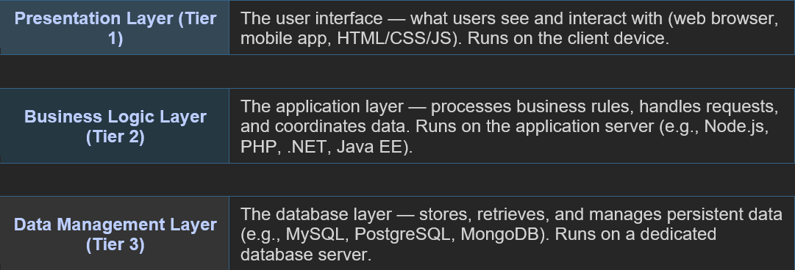
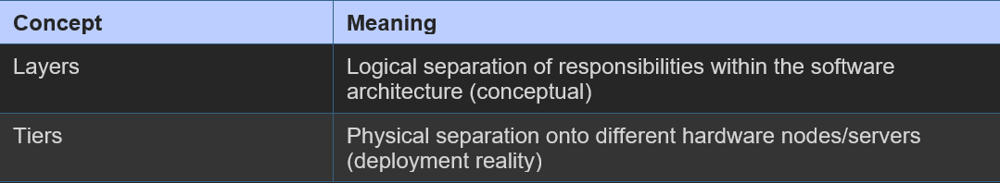

Multitier architecture is a software design pattern that separates an application into distinct logical layers and physical tiers, each responsible for a specific role. This separation improves maintainability, scalability, and security
The Three Core Layers

Layers vs Tiers

Why Multitier Architecture?
- Scalability: Each tier can be scaled independently based on demand
- Maintainability: Changes in one tier do not require changes in others
- Security: The database tier is not directly exposed to the Internet
- Reusability: Business logic can be shared across different presentation interfaces